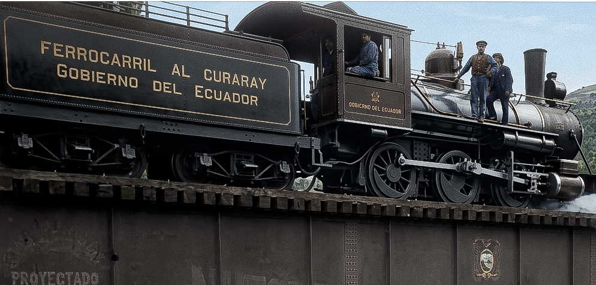
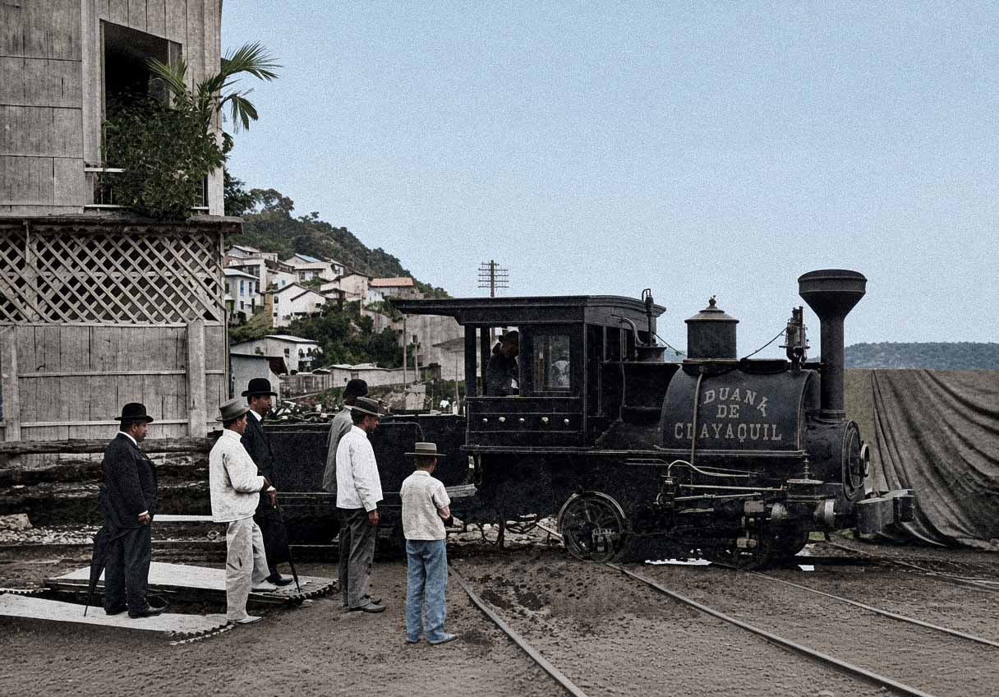
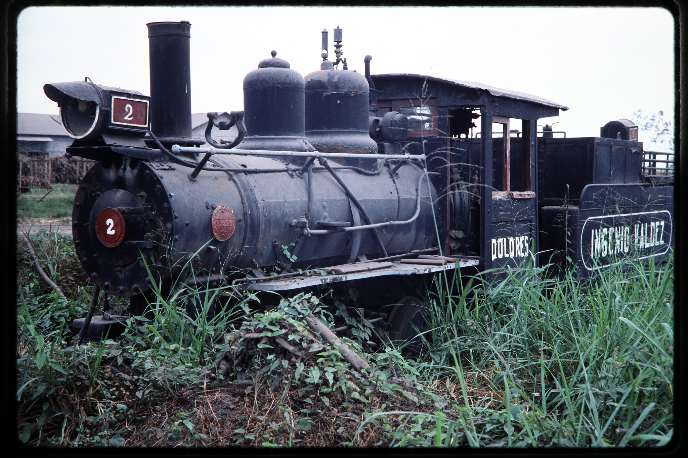
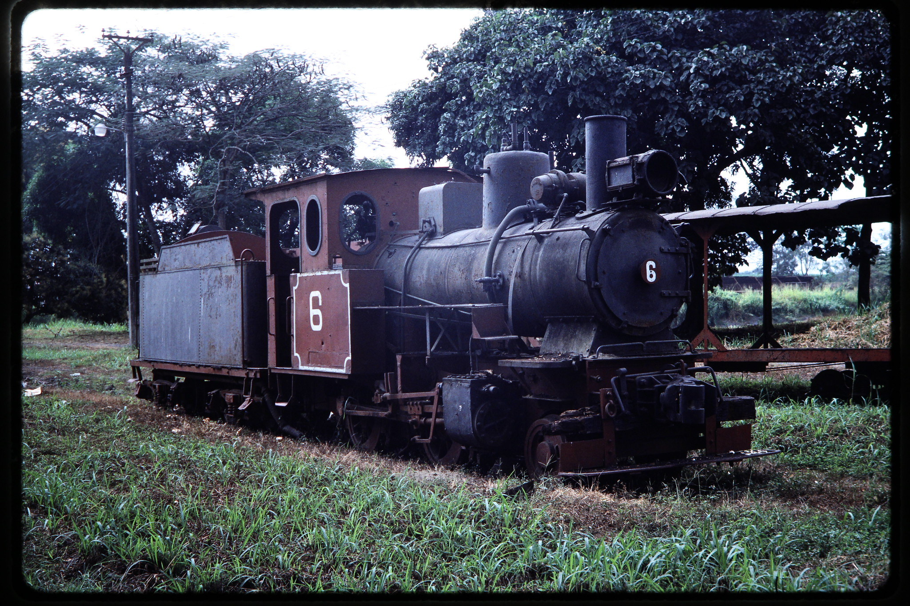
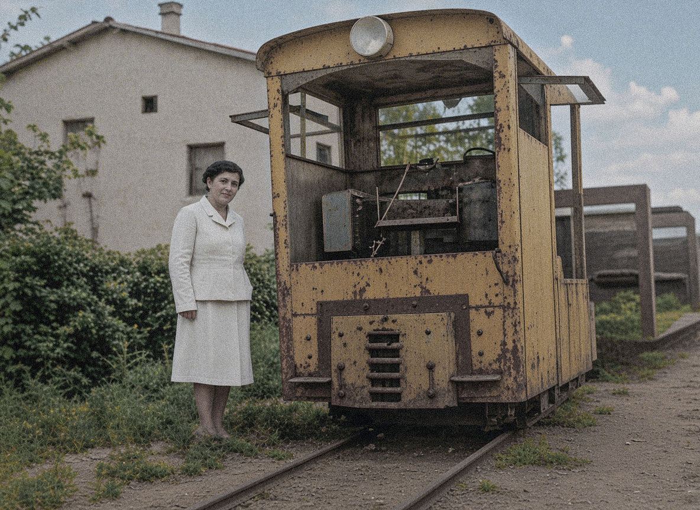
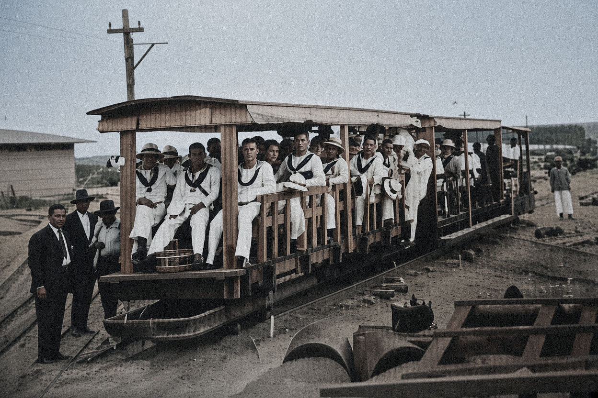
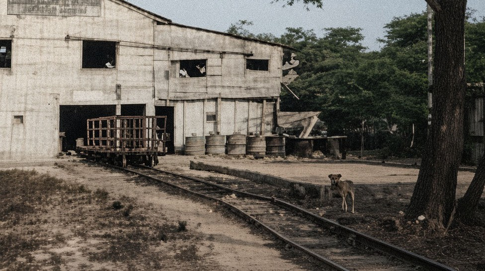

Líneas y rutas
Líneas de FFCC que conformaron la red ferroviaria ecuatoriana. También se ha incluido un apartado para los ingenios.

Ferrocarril del Sur
Primero nombrado Ferrocarril de Yaguachi es el primero de todos los ferrocarriles en el Ecuador.
Ver Detalles
Guayaquil & Quito
La legendaria línea transandina de 446km que conectó la costa con la sierra. Historia, estaciones y materialrodante emblemático.
Ver Detalles
Quito a San Lorenzo
Ruta de 373km desde Quito a Esmeraldas a través de Pinchincha e Imbabura.
Ver Detalles
Sibambe a Cuenca
Ramal de 145km desde Sibambe a la ciudad de Cuenca atravesando la provincia de Cañar.
Ver Detalles
F.C. Ambato a Curaray
Ramal de 34km desde Ambato al poblado de Pelileo en un intento de gran ferrocarril a la Amazonía.
Ver Detalles
Ferrocarril a la Costa
De Guayaquil a Salinas a través de Santa Elena y La Libertad.
Ver Detalles.png)
Ferrocarril Central del Ecuador
Ruta histórico y desaparecida de Manta a Santa pasando por Montecristi y Portoviejo.
Ver Detalles
Chemins de Fer de l’Equateur
Ferrocarril con capital francés que operaba en la ruta Bahía de Caraquez a Chone con parada en Calceta.
Ver Detalles
F.C. Puerto Bolívar a Pasaje
Ferrocarril de Puerto Bolívar a Pasaje con ramal a Guabo.
Ver Detalles
F.C. Puerto Bolívar a Loja
Ferrocarril con capital estadounidense hacia Piedras.
Ver Detalles
F.C. Aduana de Guayaquil
Ferrocarril local del malecón de Guayaquil para la aduana.
Ver DetallesFerrocarril del Estero Salado
Servicio ferroviario a través de la Av. 9 de octubre, fue incorpado al tranvía de Guayaquil.
Ver DetallesFerrocarriles industriales
Red complementaria de ingenios azucareros y pequeños ramales industriales.




